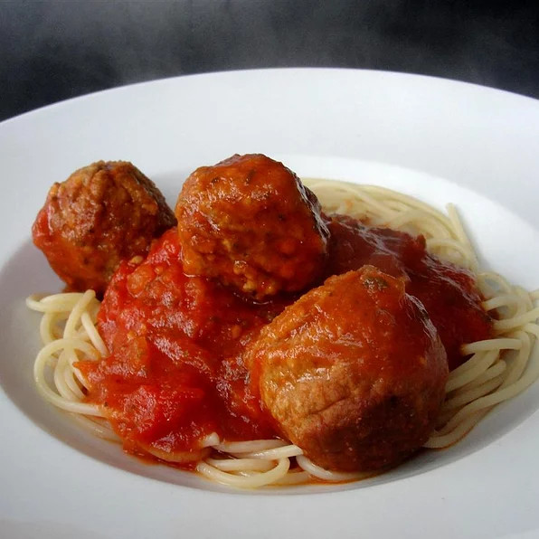

Chuncky Italian Spaghetti Sauce

Zesty traditional spaghetti sauce. Takes around 45minutes to make, 6 servings
- 450g of diced tomatoes
- 400g of tomato sauce
- 1 Tablespoon of garlic powder
- 2 teaspoons of white sugar
- 2 teaspoons of dried parsley
- 1/2 teaspoon of salt
- 1/4 teaspoon of dried oregano
- 1/4 teaspoon of dried basil
- 1/4 teaspoon ground black pepper
- Combine diced tomatoes, tomato sauce, garlic powder, sugar, parsley, salt, oregano, basil, and pepper in a saucepan
- Bring it to a boil then lower heat to medium-low and cover the saucepan
- Let it simmer for about 30 minutes